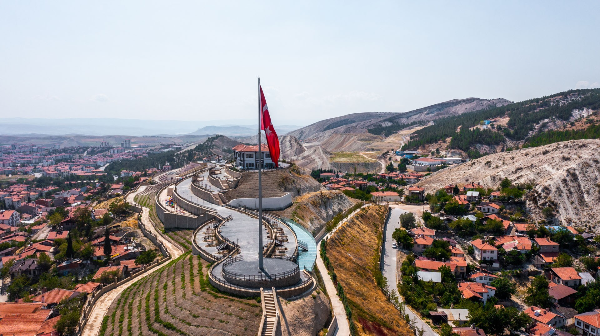
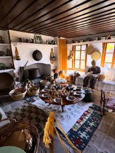
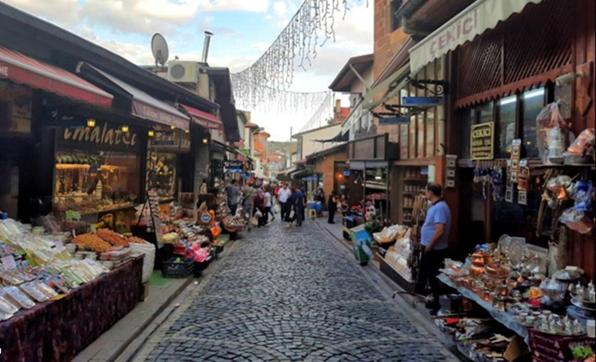
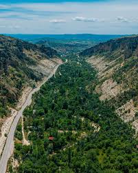
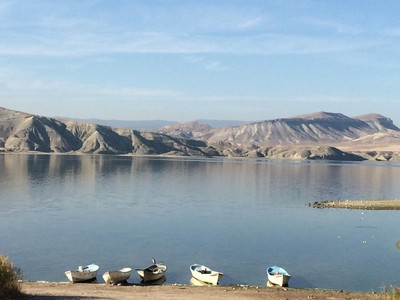
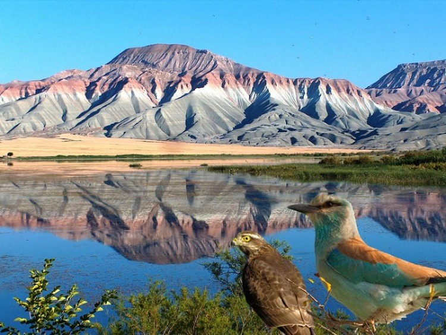
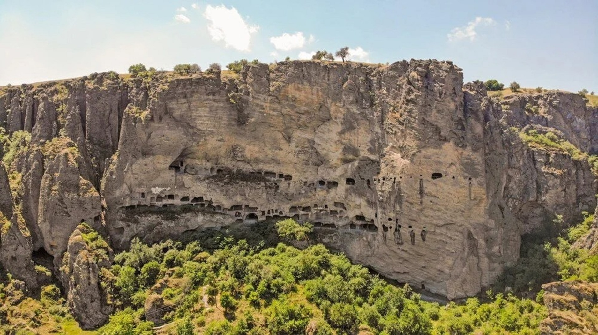

Beypazarı Merkezindeki Önemli Noktalar

Şehri kuş bakışı izleyebileceğiniz en yüksek noktadır. Tarihi konakların manzarasını buradan fotoğraflayabilirsiniz.

Geleneksel Türk kültürünü uygulamalı olarak tanıtan, Türkiye'nin ilk uygulamalı kültür müzesidir.

Yöresel ürünlerin satıldığı, Beypazarı kurusu, telkari, yöresel lezzetler ve el sanatlarını bulabileceğiniz ilçenin en hareketli yeridir.

Doğal mağaraların ve dik kayalıkların bulunduğu, piknik yapmak ve doğa yürüyüşü için ideal bir vadidir.
Yakın Çevrede Gezilecek Yerler

Sarıyar Barajı kıyısında yer alan, rengarenk tepelerin göle yansımasıyla harika manzaralar sunan bir göldür.

Gökkuşağı tepeleriyle ünlü, 190'dan fazla kuş türüne ev sahipliği yapan eşsiz bir doğal alandır.

Bizanslılar döneminden kaldığı tahmin edilen İnönü Mağaraları, dağın içini oymak suretiyle yapılan bir yapıdır. Aynı zamanda rope jumping tutkunlarının gözdesidir.